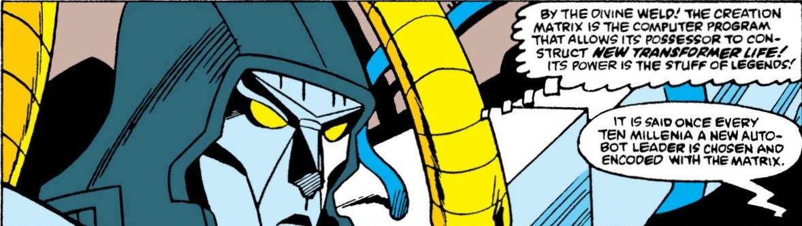

The term Matrix can refer to many different things in Transformers fiction.
The Matrix of Leadership is a staple part of Transformers mythology, a divine artifact held by Primes, denoting them as such and granting them power far beyond that of a normal Transformer. Beyond the energy alone, it also houses the wisdom of all of the past Primes, and can serve as a direct connection to the Transformers' creator god Primus, and his power. That's the general, synthesized version at least. But as the quote above suggests, there are other matrices at play, and even the Matrix of Leadership itself does not simply exist in such a concise IP-friendly form.
The first use of the term "Matrix" in Transformers traces back to nearly the
beginning, on-sale March 19th 1985 came issue 5 of Marvel Comics'
The Transformers; "The New Order". First, Megatron swears "by the
Great Matrix", a remark that on its own doesn't really say much about what
the "Great Matrix" is. A couple of pages later in that conversation,
Shockwave reveals he believes that the Autobot leader Optimus Prime
possesses the "Creation Matrix". Megatron helpfully provides exposition via
thought bubble:

Initially a four-issue limited series, issue 5 had the task of shifting
things into an ongoing format. Part of that was figuring out how to get new
toys characters into the story. In an interview with
Ben's World of Transformers, Bob
Budiansky, writer of issues 1-55, recalls:
My original intention was really to just...in looking at the
Transformers, they were all male, and I think there was a female
character in the movie. Obviously they didn't reproduce as organic
creatures might, yet new Transformers had to be created somehow and I
guess somewhere along the line I thought it'd be cool that Optimus Prime
was not just the leader of the Autobots, but I believe I made him the
possessor of the Creation Matrix. He had this gift of creating new
Transformers life. I never called him "God" or anything, but I guess I
put Transformers on a different level than living creatures on our
world. You could build a living Transformer and program it to believe. I
felt the Creation Matrix was a very sophisticated program in that
regard. I believe I made it an object of the storyline where the
Decepticons and Autobots are competing to possess the Creation Matrix.
Interviews: Bob Budiansky (February 2004)